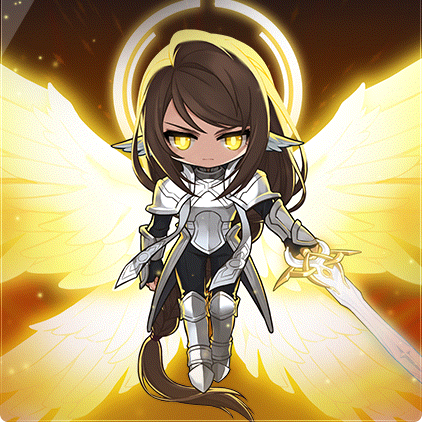

Checked-in boss knowledge
Chosen SerenDESTINY
Destiny Weapon mission · 1 of 6
Battle, Chosen Serene
-80% Final Damageagainst you
- 1 · nowChosen Seren
- 2Gatekeeper Kalos
- 3Karling
- 4The First Adversary
- 5Limbo
- 6Baldrix
- Needs 2,000 Adversary's Resolve
- Solo
- Practice Mode clears count
- No Cross World
Hits fill your Sun Gauge and a full gauge stuns you; in Phase 2 every stun also shrinks Midnight, the party's burst window.
- Boss level
- 275
- entry 275
- Defence (PDR)
- 380%
- Authentic Force
- 200
- Party
- Solo
Destiny notes
- The first missionHard Serene solo in Destiny Mode (MapleSEA v244); Gatekeeper Kalos comes next.
- Practice ModeFull-fight Practice Mode clears count outside Cross World.
Overview
Core
- Sun GaugeAlmost any hit fills it; full means a stun with no healing.
- Midnight shrinksEvery full gauge shrinks Midnight; it regrows by how many stayed uncursed. At zero the party fails, lives or not.
- Power of SunEach segment ends with one safe spot; one miss gives the whole party a lethal hit and a full gauge.
Danger
- Phase 1 pillarsNear-instant and still spawning while she is bound; many find Phase 1 hardest.
- Sunset slashesTriple slash 200% HP on Hard/Extreme (Normal 90%); sword pillars 70-90%. Duck them.
- Stunned at SunsetUsually fatal; don't enter Sunset with a near-full gauge.
- Dawn chainsKnockback, stuns, slows and orbs chain hits, and each feeds her shield.
- Midnight drainRepeated curses end the run with lives left.
Tips
- CrouchDodges her stab, rush, Noon front laser and Sunset slashes; shifts your hitbox forward.
- Bind at DawnBinding removes the deer (SEA v251); orbs have ~90% less HP since.
- Stun on your termsNear-full late in Noon? Take a cheap hit so the stun lands in Noon, crouch out of it, potion.
- Call the safe spotCall Power of Sun early; one lagging player fails it for all.
- Sunset prepKeep Decent Holy Fountain ready; avoid walls she faces, where her charge lingers.
- Hero's WillClear blindness or accuracy-down before bursting.
Phases
Phase 1
light pillars
- Gauge reset The Sun Gauge clears when Phase 2 starts (SEA v246).
- Light pillars Erupt almost instantly and keep spawning while she is bound; many players find Phase 1 the hardest.
- Pillar spacing Solo: stand between two pillar spawn points near Seren so she throws fewer sword auras; jump the slow one.
- Burst out Parties burst at once to get out of the pillar phase.
- Extreme The Phase 1 diagonal lasers fill the gauge faster.
Phase 2 · repeats
Noon
gauge fills
- Shield heal Dawn shield left at Noon heals Seren.
- Front laser Crouch dodges the Noon front laser.
- Stun on your terms Near-full late in Noon? Take a cheap hit so the stun lands here, crouch as it ends, then potion.
- Left side Solo: play the left; the far right has an off-screen hazard and the middle catches crossing lasers.
- Extreme More sun rays.
Phase 2 · repeats
Sunset
−80% healing · heavy hits
- Healing cut Healing −80% and heavy hits; Decent Holy Fountain heals normally.
- Triple slash 200% HP on Hard/Extreme, 90% on Normal; crouch all three. Sword pillars deal 70-90%.
- Arrive with room A stun here usually kills, so don't enter Sunset with a near-full gauge.
- Off the wall Don't fight her pinned to a wall she faces; her charge lingers there.
Phase 2 · repeats
Midnight
burst · no gauge
- Burst window Weak attacks that never fill the gauge.
- Shrinks per curse Each curse shrinks Midnight; it regrows at each time change by how many stayed uncursed. At zero the party fails.
- Burst timing Hold binds and the main burst for Midnight; start on the caller's mark once everyone is in the Power of Sun safe spot.
- Push before Dawn Leftover Dawn shield heals back at Noon, so take as much HP here as you can.
- Finish here Strong solos and duos aim to kill her in Midnight; if she will survive, save i-frames or Ascent for Dawn.
Phase 2 · repeats
Dawn
shield · deer · orbs
- Shield About 10% of her HP; grows over time and when players are hit.
- Deer and orbs Deer (Nerota's Incarnation) chase you; blue orbs explode nearby.
- Bind removes deer Binding Seren makes the deer vanish (SEA v251); orbs have about 90% less HP since.
- Chain hits Knockback, stuns, slows and orbs chain into more hits, and each feeds her shield.
- Solo route Fight away from orb spawns, kite the deer across, pass through her after her trap cast and clear orbs; a common personal target is under 5-10% healing.
Strategies
Options, not orders: each trades risk against the damage it needs.
Burst at Midnight
- Risk
- Low
- Damage need
- Medium
- When
- Parties of 2-6, especially Normal and Hard with mixed damage; a learning default the party agrees before entry
- Payoff
- Safest burst window; protects the Midnight segment
- Burst immediately in Phase 1 to get out of the pillar phase.
- In Phase 2, hold binds and main burst for Midnight. The caller confirms the start once everyone is in the Power of Sun safe spot (the exact pre-resolution timing is unverified).
- Push as much HP as possible before Dawn, because leftover Dawn shield is healed back at Noon.
- Everyone plays to avoid curses in Noon, Sunset and Dawn; clean segments regrow Midnight.
Finish before Dawn
- Risk
- Medium
- Damage need
- High
- When
- Strong solo or duo that has shown it can take the remaining HP in one Midnight window
- Payoff
- Skips Dawn's shield and deer entirely
- Go into Phase 2 Midnight with every burst and bind and aim to finish her there.
- If she will clearly survive, save Genesis i-frames or Ascent skills to survive Dawn instead.
Dodge between attacks
- Risk
- Medium
- Damage need
- Medium
- When
- Solo Normal or Hard
- Payoff
- Very few gauge stuns while keeping DPS up
- Learn how many attacks fit between her stab and rush and crouch on cue.
- Phase 1 - stand between two pillar spawn points and stay near Seren so she throws fewer sword auras; jump over the slow one.
- Noon - the left side usually works; the far right has an off-screen hazard and the middle catches crossing lasers. Adjust to the pattern.
- Dawn - fight on one side away from orb spawns, kite the deer across, wait for her trap cast, then pass through her and clear orbs; binding her removes the deer (SEA v251). Healing under about 5-10% is one player's target, not a fixed threshold.
Notes
- Destiny Resolve per clearHard 6 · Extreme 80, split among everyone who entered.
- HP estimatesOverdrive HP is estimated from the published KMS reductions.
Sources
- Official 8
- Guide 2
- Wiki 2
- Tool 1
- MapleSEA v251 Content Updates Part 2
- MapleSEA v251 Content Updates
- MapleSEA v244 Patch Notes
- MapleSEA v246 Patch Notes
- MapleSEA v227 NEW AGE Patch Notes
- KMS 1.2.416 OVERDRIVE patch notes
- CHOSEN SEREN Boss Guide, all difficulties (2026)
- Tips & Tricks for Soloing HARD Seren
- MapleTools - Seren
- MapleStory Wiki - Seren/Monster
- MapleSEA v243 NEXT II patch notes (Union Champion)
- KMS official guide - Union Champion
- MapleStory Wiki - Destiny Weapon
Our own paraphrase of these sources; the authors are credited above.